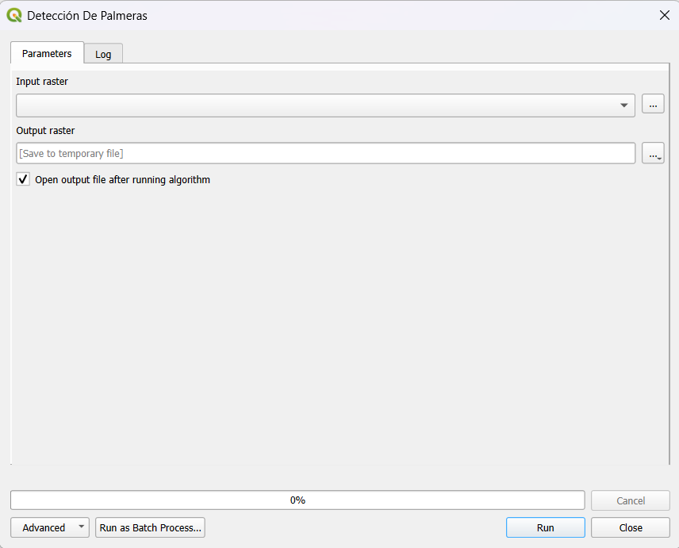
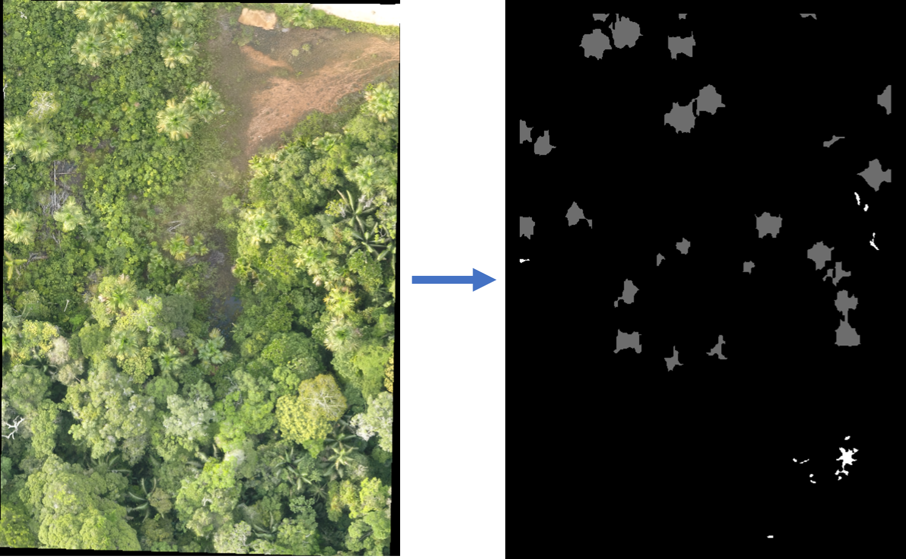

PalmsCNN: Detección de Palmeras
Versión: 1.3.0 | Institución: Instituto de Investigaciones de la Amazonía Peruana (IIAP)
Introducción
El complemento PalmsCNN permite detectar automáticamente tres especies de palmeras amazónicas —aguaje (Mauritia flexuosa), huasaí (Euterpe precatoria) y ungurahui (Oenocarpus bataua)— en imágenes RGB adquiridas mediante drones.
Utiliza un modelo de redes neuronales convolucionales (CNN) para procesar la información visual y generar mapas de presencia de palmeras.

Instalación y dependencias
- Al abrir el plugin por primera vez, se ejecutará un diálogo modal que prepara un entorno virtual (
venv) con las librerías necesarias: numpy, scikit-image y onnxruntime.
- El proceso es automático y solo requiere conexión a Internet durante la primera instalación.
- Una vez completado, el entorno se almacenará localmente y no será necesario reinstalarlo, salvo actualización del plugin.
Uso
- Abra QGIS y vaya al menú Procesos → PalmsCNN: Detección de Palmeras.
- Seleccione una imagen RGB (de dron o satélite de alta resolución).
- Indique la especie de interés o seleccione “todas”.
- Ejecute el algoritmo y espere la generación de los resultados.
- El resultado será una capa raster o vectorial con las detecciones georreferenciadas.

Solución de problemas
- No se crea el entorno virtual: Verifique que QGIS tenga acceso a Internet y permisos de escritura en la carpeta del usuario.
- Error SSL: asegúrese de que QGIS use un intérprete de Python con soporte SSL (viene por defecto en Windows y Linux).
- El plugin no aparece: revise la versión mínima requerida de QGIS (3.34 o superior).
Créditos
Desarrollado por el Laboratorio de Inteligencia Artificial - BOSQUES – IIAP.
Autores: Susan Palacios, Rodolfo Cardenas, Stephano Torres, Ximena Tagle
Contacto: rcardenasv@iiap.gob.pe